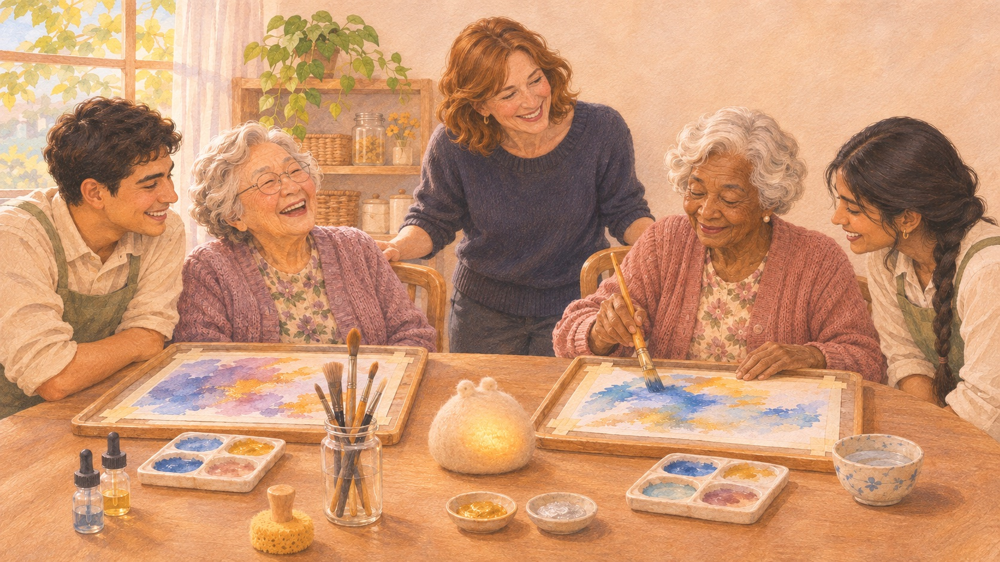
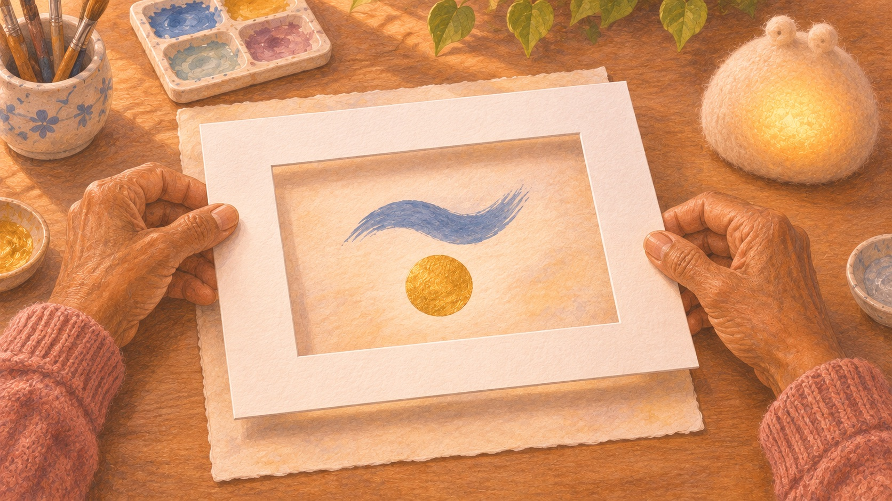
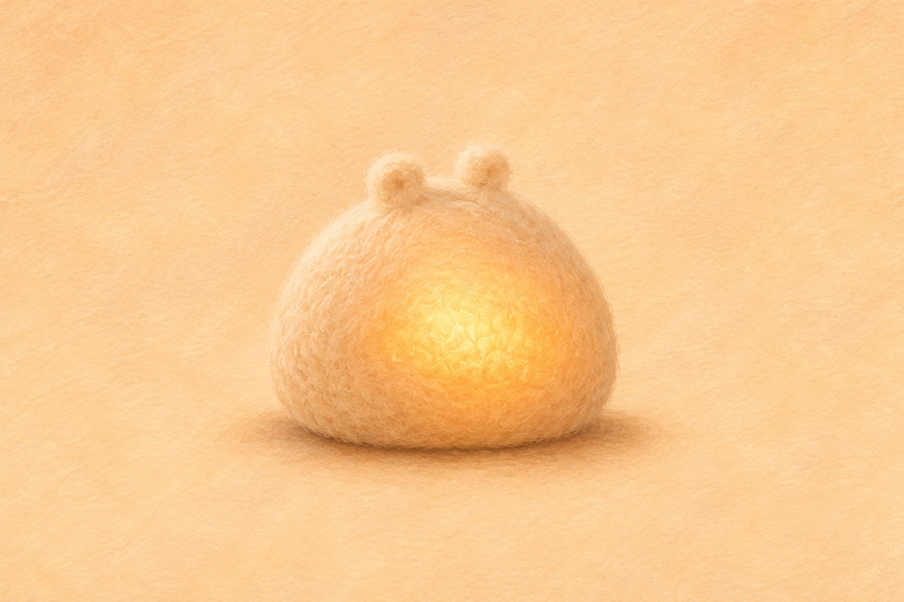
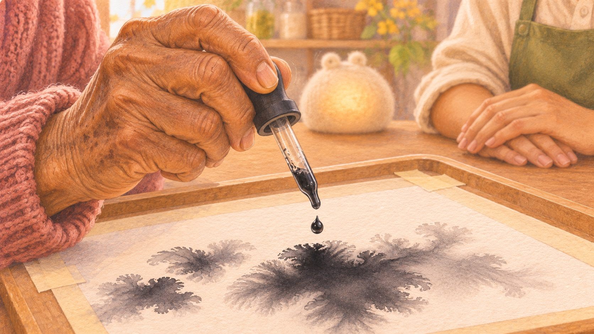
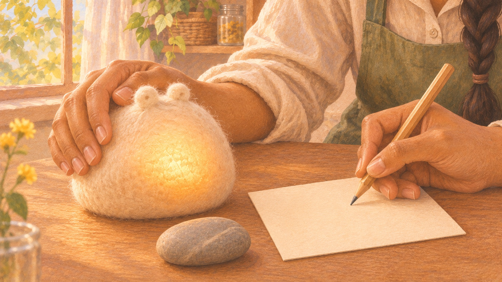
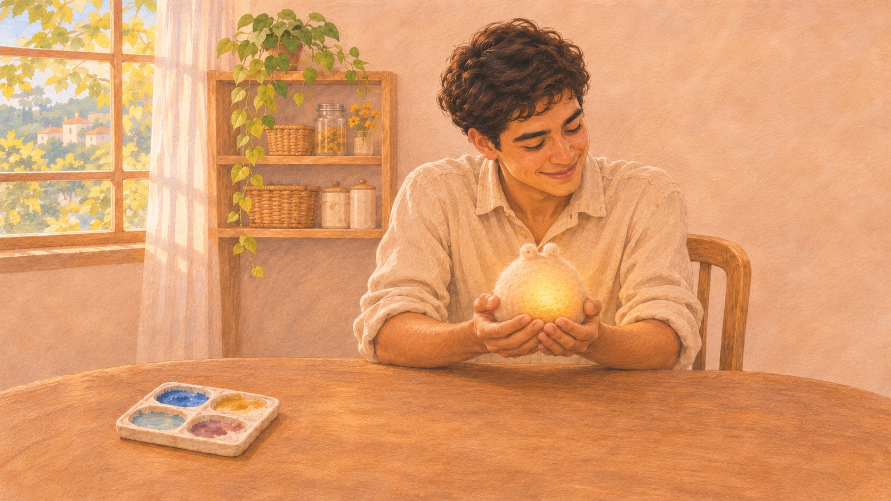
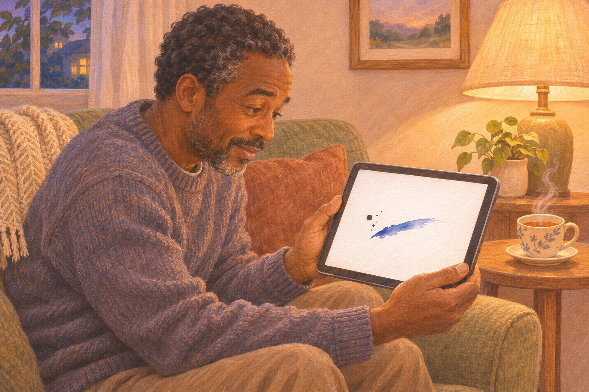
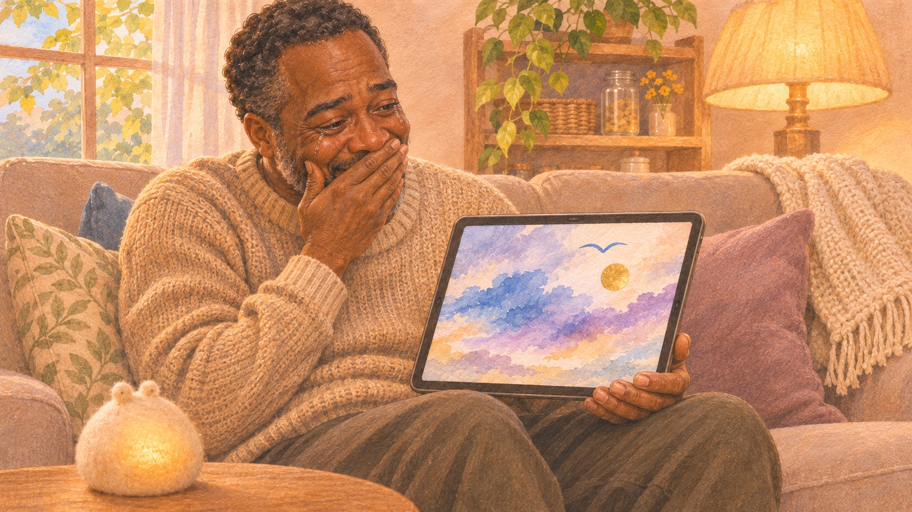
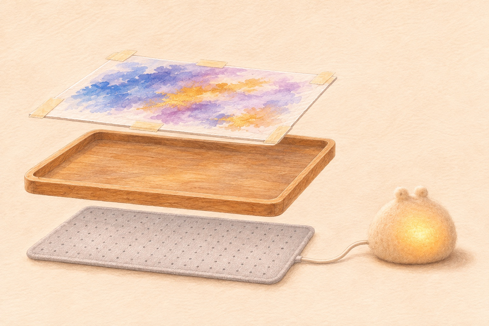
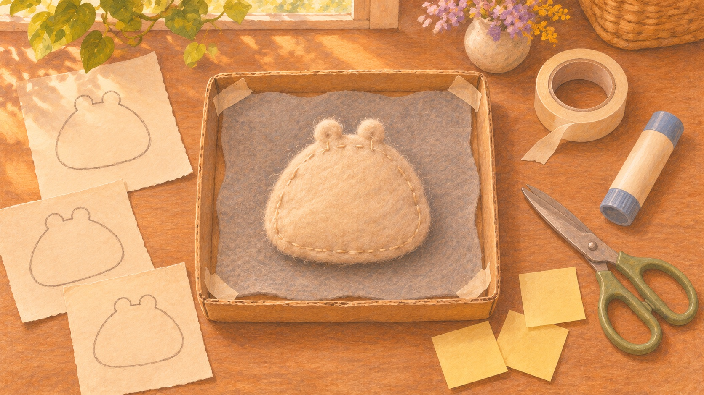

Human-centered robotics for longevity. We are working with Opening Minds through Art (OMA), an art program for people living with dementia.
Gordon Cheng · Abbie Lai · Lesley Chung · Ying Chung · Yaritza
Today: a two-minute film, then revised concept visuals, a journey map, and a crude prototype.

Families and friends can’t feel the connection and care of residents living with dementia. So residents lose their social ties beyond the care home.
We want AI and robots to amplify imagination, and to keep the memories, feelings, and warmth of people living with dementia.
A machine that reads emotion and micro-movements. The facilitator doesn’t want it: That’s the fun part of my job.
The intern worried that one wrong reading takes the choice away from the artist.
Walking volunteers through the steps.
Translation. The facilitator told us that when English is a second language, dementia takes it first.
The paper frame goes on, and an exercise becomes a piece of work. One artist arrived saying “I’m not an artist.” By the end, a painting on the table had a name: Blue Bird on the Moon.

Palm-sized. It sits on the art table for the hour.

Felt, round, two small ears, a warm glow. No screen, no camera, no recording. It never touches the painting, and it stays silent unless someone needs translation.
A pressure mat under the tray notes the order of every stroke. It translates when needed.
A Moment to Keep. The partner holds on to one moment from today. Voluntary, never scored.
They watch the painting appear stroke by stroke, in the order it was painted. The title comes last.
The artist feels a tray and nothing else.

A Moment to Keep, Abbie Lai’s concept. Voluntary, never scored.


Stroke by stroke. The title comes last.




TodayHow the layers stack under the tray, and a paper mock-up on a table.
By Nov 30Build the paper model. Work out how to test the mat: can it catch stroke order through a tray? 3D-print the shell.
How do we address privacy concerns? Residents can’t be photographed or recorded. What may a robot at the table sense and share?
Do families want this? We haven’t interviewed a family member yet.
Should the painting ever move? In OMA every aesthetic choice belongs to the artist, and the facilitator is against AI-generated images.
How much weight should translation carry? It is the one need people named, and it is a different kind of job.
Illustrations are generated reenactments. No residents are depicted. OMA is a program of the Scripps Gerontology Center, Miami University.